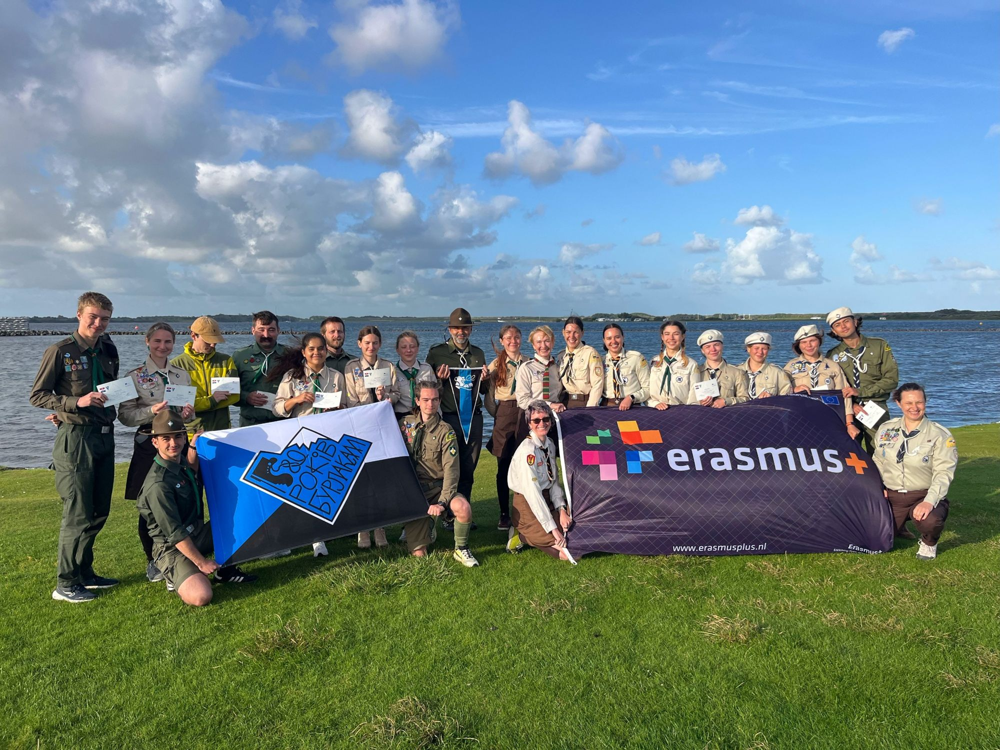
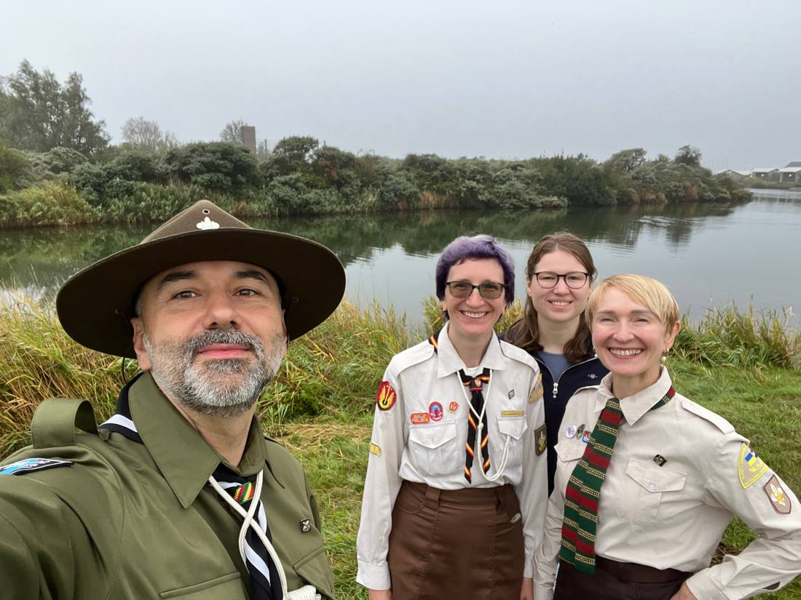
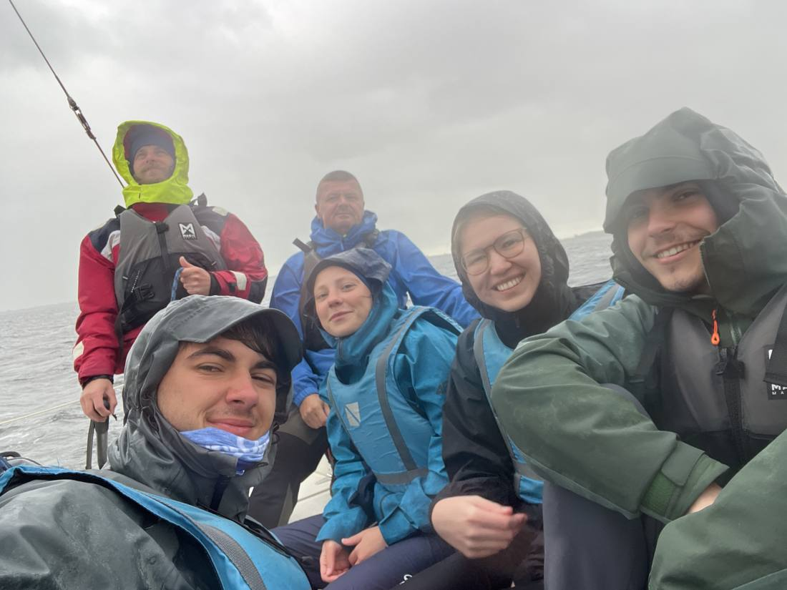
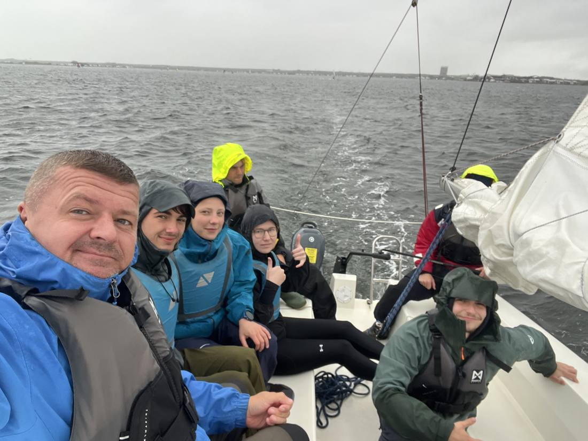
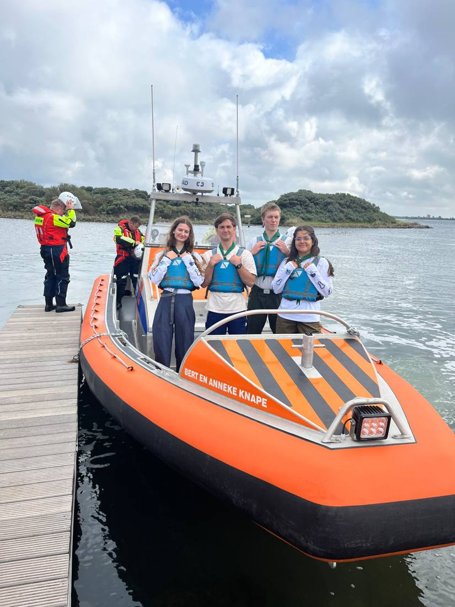
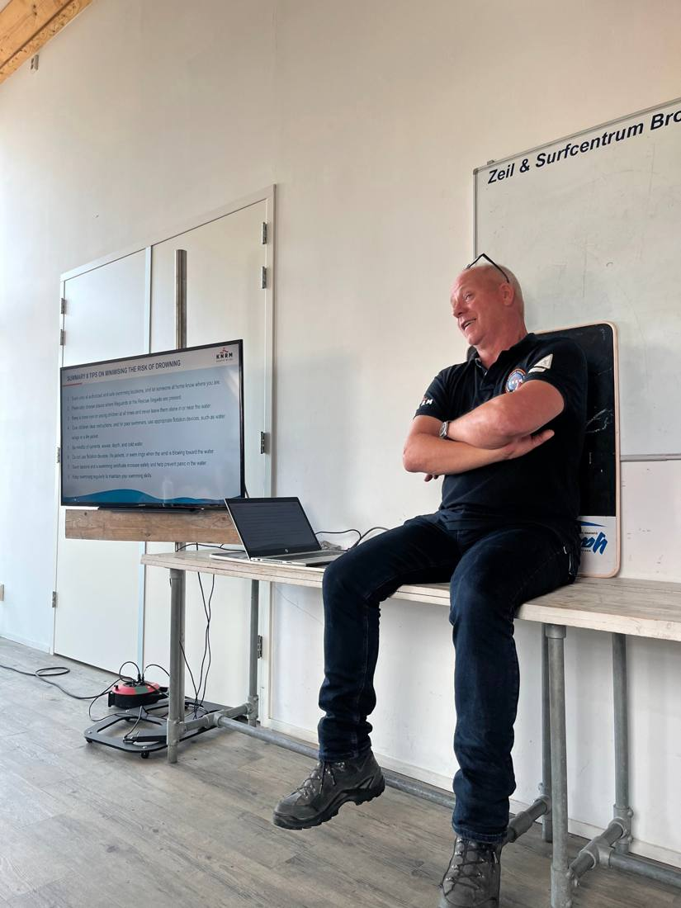
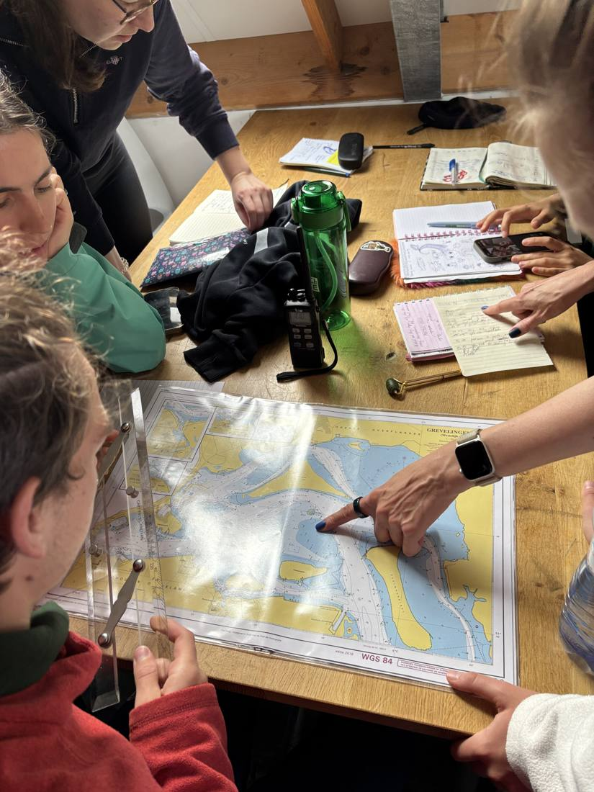
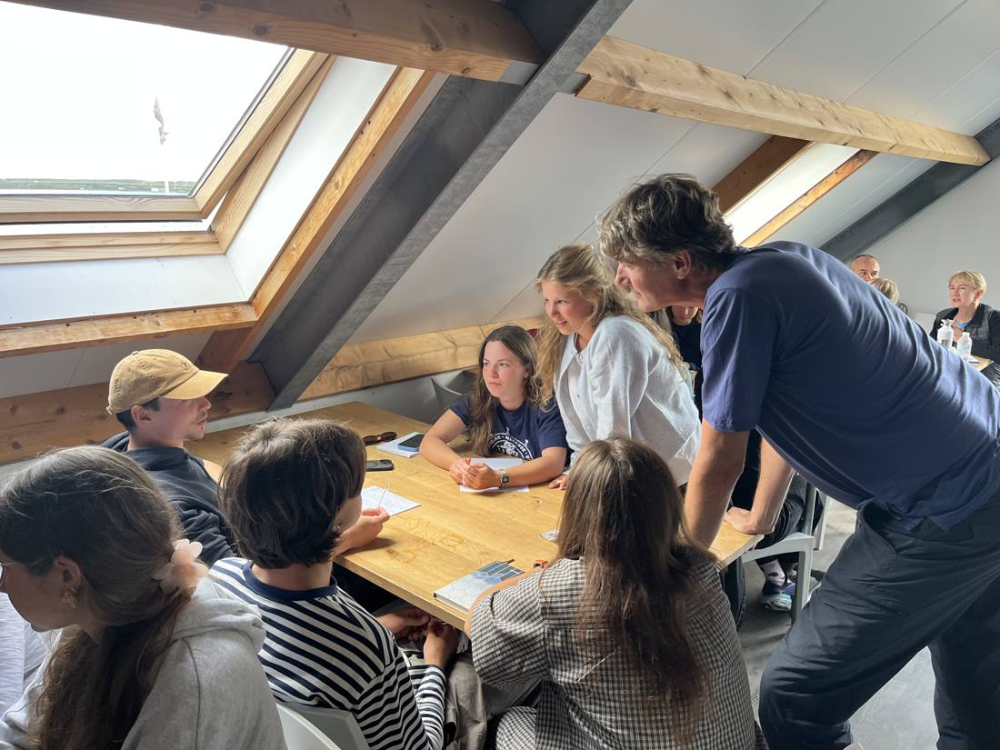
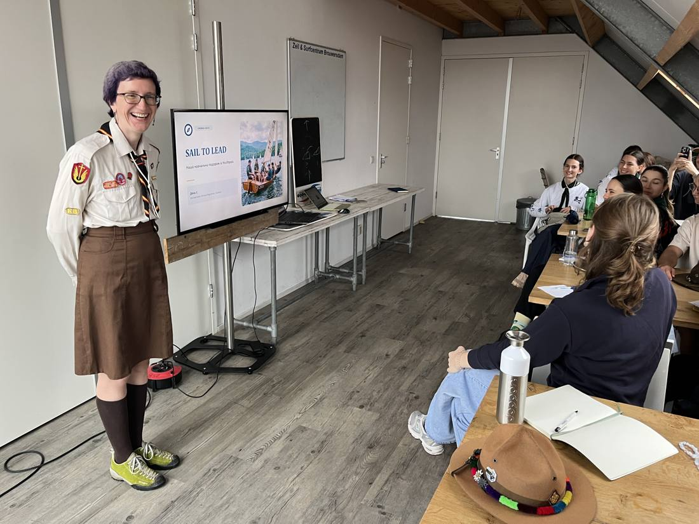
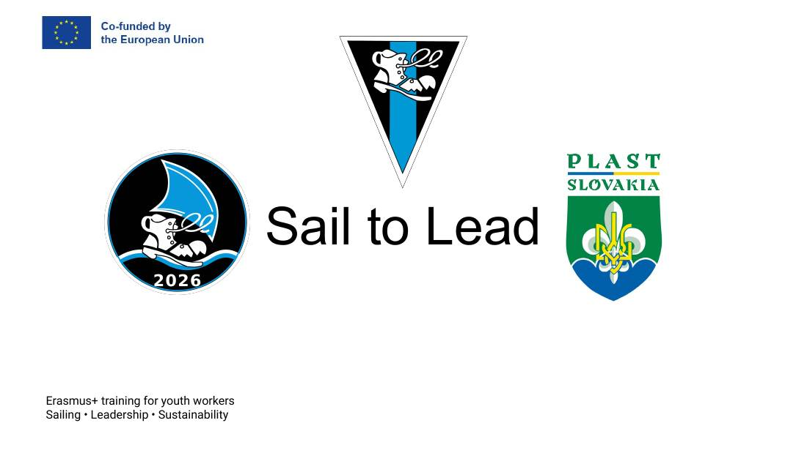

Water Sports for Youth Work
Безкоштовний набір матеріалів для виховників і працівників з молоддю: як провести безпечне, інклюзивне та екологічне заняття на воді. A free toolkit for youth workers: how to run a safe, inclusive and eco-friendly activity on the water.
Переглянути матеріалиBrowse the materials Завантажити PDFDownload the PDFПроєкт Erasmus+, співфінансований Європейським Союзом.An Erasmus+ project, co-funded by the European Union.
Що таке Sail to Lead?What is Sail to Lead?
Міжнародний проєкт Erasmus+ для пластунів і молодіжних працівників із Нідерландів, Іспанії, Словаччини, Польщі, України та Австрії. Вишкіл відбувся в Brouwersdam Windsurfing Center, Ouddorp. Тут зібрано все, що учасники підготували, щоб ви могли провести подібну активність у своїй країні.
An Erasmus+ project for Plast scouts and youth workers from the Netherlands, Spain, Slovakia, Poland, Ukraine and Austria. The training took place at Brouwersdam Windsurfing Center, Ouddorp. This site gathers what participants prepared, so you can run a similar activity in your own country.
Матеріали за темамиMaterials by topic
Кожен розділ підготувала окрема робоча група. Усі матеріали будуть доступні онлайн і у форматі PDF.Each section was prepared by a separate working group. Everything will be available online and as a PDF.
Методика вітрильництваSailing methodology
Етапи навчання, сценарії занять, чеклісти та картки локацій у шести країнах.Learning stages, session outlines, checklists and location cards in six countries. In Ukrainian.
Читати онлайнRead online PDFPDF DOCX для редагуванняDOCX (editable)
Методика віндсерфінгуWindsurfing methodology
Як навчати віндсерфінгу, а також клуби й школи у шести країнах.How to teach windsurfing, plus clubs and schools in six countries. In Ukrainian.
Безпека та управління ризикамиSafety and risk management
Практичний пакет безпеки та safeguarding: правила, ролі, оцінка ризиків і робочі форми.A practical safety and safeguarding pack: rules, roles, risk assessment and working forms. In Ukrainian.
Читати онлайнRead online Положення PDFPolicy PDF Форми ExcelForms Excel
Інклюзія та рефлексіяInclusion and reflection
Підтримка учасників із меншими можливостями, адаптації занять, організації за країнами та дві книжечки для рефлексії.Supporting participants with fewer opportunities, session adaptations, organisations by country and two reflection booklets. In Ukrainian.
Читати онлайнRead online АдаптаціїAdaptations Організації за країнамиOrganisations by country Інклюзія (9 с.)Inclusion guide (9 pp.) Книжечка виховника (18 с.)Leader handbook (18 pp.) Книжечка учасника (13 с.)Participant booklet (13 pp.)
Екологічна відповідальністьEnvironmental responsibility
Принцип «Не залишай сліду», еко-таборування та місця для табору в різних країнах.Leave No Trace, eco-camping and camping spots in different countries. In Ukrainian.
Місцеві ресурси за країноюLocal resources by country
Оберіть країну, і ми покажемо, на яких сторінках матеріалів про неї написано: де вчитися, які є школи й клуби та де таборувати. Посилання відкривають PDF одразу на потрібній сторінці.Choose a country to see which pages of the materials cover it: where to learn, which schools and clubs exist and where to camp. Links open the PDF at the right page. The materials are in Ukrainian.
Нідерланди Nederland
| ТемаTopic | Де це в матеріалахWhere to find it | СторінкиPages |
|---|---|---|
| Вітрильництво: де вчитисяSailing: where to learn | Методика вітрильництва, картка локаціїSailing methodology, location card | с. 5–6pp. 5–6 |
| Віндсерфінг: школи й клубиWindsurfing: schools and clubs | Методика віндсерфінгу, каталогWindsurfing methodology, catalogue | с. 28–32pp. 28–32 |
| ТаборуванняCamping | Camping guide, порівняння місцьCamping guide, comparison of sites | с. 4–7pp. 4–7 |
| Безпека: країнова карткаSafety: country card | Пакет безпеки, розділ 4 і форма 10Safety pack, section 4 and form 10 | ВідкритиOpen |
| Інклюзія: організації та фондиInclusion: organisations and funds | Організації та ресурси за країнамиOrganisations and resources by country | ВідкритиOpen |
Іспанія España
| ТемаTopic | Де це в матеріалахWhere to find it | СторінкиPages |
|---|---|---|
| Вітрильництво: де вчитисяSailing: where to learn | Методика вітрильництва, картка локаціїSailing methodology, location card | с. 7p. 7 |
| Віндсерфінг: школи й клубиWindsurfing: schools and clubs | Методика віндсерфінгу, каталогWindsurfing methodology, catalogue | с. 33–36pp. 33–36 |
| ТаборуванняCamping | Camping guide, порівняння місцьCamping guide, comparison of sites | с. 25–30pp. 25–30 |
| Безпека: країнова карткаSafety: country card | Пакет безпеки, розділ 4 і форма 10Safety pack, section 4 and form 10 | ВідкритиOpen |
| Інклюзія: організації та фондиInclusion: organisations and funds | Організації та ресурси за країнамиOrganisations and resources by country | ВідкритиOpen |
Словаччина Slovensko
| ТемаTopic | Де це в матеріалахWhere to find it | СторінкиPages |
|---|---|---|
| Вітрильництво: де вчитисяSailing: where to learn | Методика вітрильництва, картка локаціїSailing methodology, location card | с. 8p. 8 |
| Вітрильництво: школи, клуби, ціниSailing: schools, clubs, prices | Методика віндсерфінгу, ресурси для вітрильництваWindsurfing methodology, sailing resources | с. 10–11pp. 10–11 |
| ТаборуванняCamping | Camping guide, порівняння місцьCamping guide, comparison of sites | с. 22–24pp. 22–24 |
| Безпека: країнова карткаSafety: country card | Пакет безпеки, розділ 4 і форма 10Safety pack, section 4 and form 10 | ВідкритиOpen |
| Інклюзія: організації та фондиInclusion: organisations and funds | Організації та ресурси за країнамиOrganisations and resources by country | ВідкритиOpen |
Польща Polska
| ТемаTopic | Де це в матеріалахWhere to find it | СторінкиPages |
|---|---|---|
| Вітрильництво: де вчитисяSailing: where to learn | Методика вітрильництва, картка локаціїSailing methodology, location card | с. 9–10pp. 9–10 |
| Вітрильництво: школи, клуби, ціниSailing: schools, clubs, prices | Методика віндсерфінгу, ресурси для вітрильництваWindsurfing methodology, sailing resources | с. 9–10pp. 9–10 |
| ТаборуванняCamping | Camping guide, порівняння місцьCamping guide, comparison of sites | с. 13–17pp. 13–17 |
| Безпека: країнова карткаSafety: country card | Пакет безпеки, розділ 4 і форма 10Safety pack, section 4 and form 10 | ВідкритиOpen |
| Інклюзія: організації та фондиInclusion: organisations and funds | Організації та ресурси за країнамиOrganisations and resources by country | ВідкритиOpen |
Україна Україна
| ТемаTopic | Де це в матеріалахWhere to find it | СторінкиPages |
|---|---|---|
| Вітрильництво: де вчитисяSailing: where to learn | Методика вітрильництва, картка локаціїSailing methodology, location card | с. 11p. 11 |
| Вітрильництво: школи, клуби, ціниSailing: schools, clubs, prices | Методика віндсерфінгу, ресурси для вітрильництваWindsurfing methodology, sailing resources | с. 11–12pp. 11–12 |
| ТаборуванняCamping | Camping guide, порівняння місцьCamping guide, comparison of sites | с. 18–21pp. 18–21 |
| Безпека: країнова карткаSafety: country card | Пакет безпеки, розділ 4 і форма 10Safety pack, section 4 and form 10 | ВідкритиOpen |
| Інклюзія: організації та фондиInclusion: organisations and funds | Організації та ресурси за країнамиOrganisations and resources by country | ВідкритиOpen |
Австрія Österreich
| ТемаTopic | Де це в матеріалахWhere to find it | СторінкиPages |
|---|---|---|
| Вітрильництво: де вчитисяSailing: where to learn | Методика вітрильництва, картка локаціїSailing methodology, location card | с. 12–14pp. 12–14 |
| Віндсерфінг: школи й клубиWindsurfing: schools and clubs | Методика віндсерфінгу, каталогWindsurfing methodology, catalogue | с. 37–41pp. 37–41 |
| ТаборуванняCamping | Camping guide, порівняння місцьCamping guide, comparison of sites | с. 8–12pp. 8–12 |
| Безпека: країнова карткаSafety: country card | Пакет безпеки, розділ 4 і форма 10Safety pack, section 4 and form 10 | ВідкритиOpen |
| Інклюзія: організації та фондиInclusion: organisations and funds | Організації та ресурси за країнамиOrganisations and resources by country | ВідкритиOpen |
Сторінки вказано за версіями PDF на цьому сайті. Дані в матеріалах мають статуси, а частина позначена як «потребує уточнення». Ціни, контакти й сезонні умови перед поїздкою перевірте за джерелом. Каталог ще доповнюватиметься.Page numbers refer to the PDF versions on this site. Many entries carry a status and some are marked “needs checking”. Verify prices, contacts and seasonal conditions at the source before you travel. The catalogue will keep growing.
Brouwersdam, Zeeland
Sail to Lead — п’ятиденний тренінг для майбутніх організаторів вітрильних і віндсерфінгових заходів. Він відбувся 13–18 вересня 2026 року в Brouwersdam Windsurfing Center неподалік Роттердама. Учасники з шести країн практикували віндсерфінг і вітрильництво на RS Zest, слухали лекцію рятувальників KNRM, працювали з морськими картами, відвідали воркшопи Sailors for Sustainability та IVN Natuureducatie, а тепер разом готують матеріали цього набору.
Sail to Lead is a five-day training for future organisers of sailing and windsurfing activities. It took place on 13–18 September 2026 at Brouwersdam Windsurfing Center near Rotterdam. Participants from six countries practised windsurfing and sailing on RS Zest boats, heard a talk by KNRM rescuers, worked with nautical charts, joined workshops by Sailors for Sustainability and IVN Natuureducatie, and are now preparing the materials of this toolkit together.
Фото з вишколуPhotos from the training










Онлайн-презентаціяOnline presentation
Готова презентація про вишкіл. Учасники можуть показувати її, щоб розповісти про проєкт у своїх країнах. Оберіть мову, гортайте стрілками або клавішами ← → і завантажуйте PDF.A ready-made presentation about the training. Participants can use it to tell people about the project in their own countries. Choose a language, browse with the arrows or the ← → keys, and download the PDF.

ЗавантажитиDownload
Усі розділи одним файлом, а також окремі матеріали для друку й роботи.All sections in one file, plus separate materials for printing and editing. The materials are in Ukrainian.
Water Sports for Youth Work ToolkitWater Sports for Youth Work Toolkit
Повний набір в одному PDF: 172 сторінки, зміст і закладки. Вітрильництво, віндсерфінг, безпека, інклюзія та рефлексія, екологія. Версія 1, листопад 2026.The complete toolkit as one PDF: 172 pages with contents and bookmarks. Sailing, windsurfing, safety, inclusion and reflection, ecology. Version 1, November 2026.
Завантажити toolkit (PDF, 2 МБ)Download the toolkit (PDF, 2 MB)Окремі матеріалиSeparate materials
- Методика вітрильництва (PDF)Sailing methodology (PDF) · DOCX
- Методика віндсерфінгу (PDF)Windsurfing methodology (PDF)
- Положення з техніки безпеки (PDF)Safety policy (PDF) · DOCX
- Робочі форми безпеки (Excel)Safety forms (Excel)
- Таблиця оцінки ризиків (Excel)Risk assessment table (Excel)
- Матриця відповідальності (Excel)Responsibility matrix (Excel)
- Підтримка учасників із меншими можливостями (PDF)Supporting participants with fewer opportunities (PDF)
- Адаптації занять (PDF)Session adaptations (PDF)
- Організації та ресурси за країнами (PDF)Organisations and resources by country (PDF)
- Книжечка виховника (PDF)Leader handbook (PDF)
- Книжечка учасника (PDF)Participant booklet (PDF)
- Еко-табір: посібник (PDF)Eco-camp guide (PDF)
- Презентація про вишкіл (PDF)Training presentation (PDF)
- Презентація словацькою (PDF)Training presentation, Slovak (PDF)